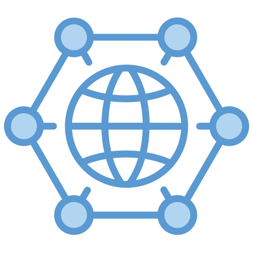

Tantárgy bemutató

A Hálózatkezelés tantárgy célja, hogy a tanulók megismerjék a számítógépes hálózatok működésének alapjait és a hálózati eszközök kezelését. A tantárgy során a diákok betekintést kapnak abba, hogyan kapcsolódnak egymáshoz a számítógépek és más eszközök egy hálózatban, valamint hogyan történik az adatok továbbítása.
A tananyag része a hálózatok felépítése, az IP-címzés alapjai, valamint a különböző hálózati eszközök, például routerek és switchek működése. A tanulók megismerkednek az alapvető hálózati beállításokkal és a hálózati hibák felismerésével is.
A gyakorlatokon nagyrészt a Cisco Packet Tracer programot használtuk, amely egy hálózatszimulációs szoftver. Ennek segítségével különböző hálózatokat lehetett megtervezni, eszközöket összekapcsolni, valamint routereket és switcheket konfigurálni. A tantárgy célja, hogy a tanulók alapvető gyakorlati tapasztalatot szerezzenek a hálózatok működéséről és kezeléséről.